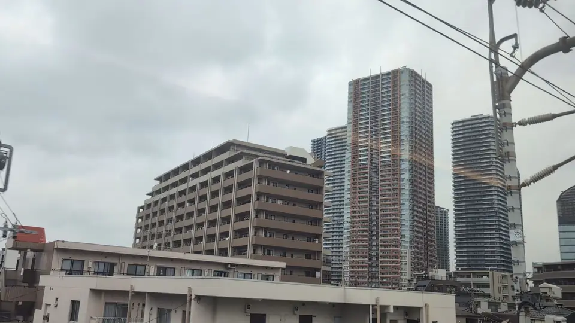

TOKAIDO SHINKANSEN WINDOW VIEW
When can you see Musashi-Kosugi Towers from the Shinkansen?
A wall of towers after the river.

- Section
- Shinagawa → Shin-Yokohama, around Musashi-Kosugi
- Seat side
- Seat E · mountain side
- Timing
- About 14 minutes after leaving Tokyo on a Nozomi train
- Photos
- 3 photos
Location at a glance
Open mapSwitch between the spot and the Shinkansen viewpoint.
How to find Musashi-Kosugi Towers
Heading from Tokyo toward Shin-Osaka, just after Maruko Bridge, the Musashi-Kosugi high-rise towers appear on the Seat E side. The view shifts suddenly from the open Tama River to a dense vertical city. It is not a classic landmark, but it captures the scale of Greater Tokyo from the train window. By day the height stands out; at night, the stacked window lights do.
If you are traveling from Tokyo toward Shin-Osaka, start watching the Seat E · mountain side window as you approach Shinagawa → Shin-Yokohama, around Musashi-Kosugi. If you are traveling toward Tokyo, the order is reversed.
Why this view matters
Musashi-Kosugi Towers is one of the window views that make the Tokaido Shinkansen more than a transfer. The train moves fast, so visibility depends on weather, seat position, and timing.
Musashi-Kosugi Towers in photos
